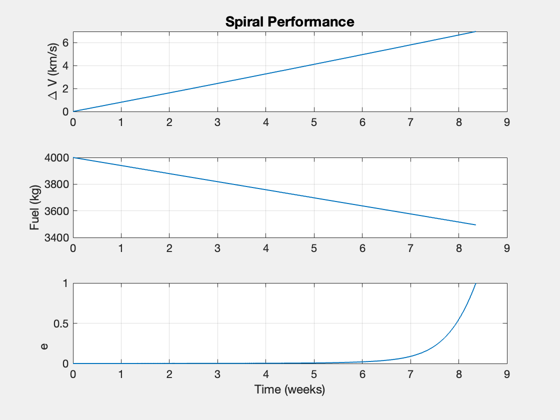
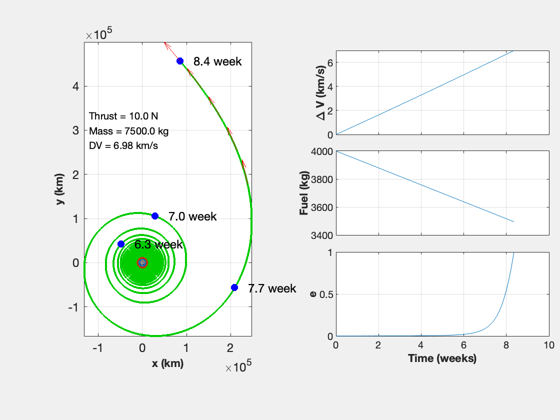

Simulate a departure from the Earth
Treat the problem as planar.
See also TwoDEscape, Date2JD, TimeLabl
%-------------------------------------------------------------------------- % Copyright (c) 2016 Princeton Satellite Systems, Inc. % All rights reserved. %-------------------------------------------------------------------------- % Since 2017.1 %-------------------------------------------------------------------------- rE = Constant('equatorial radius earth'); r = rE + 386; mu = Constant('mu earth'); uE = 100e3; % exhaust velocity [m/s] m0 = 3500; % initial mass mF = 4000; % fuel mass jD0 = Date2JD([2024 5 5 0 0 0]); thrust = 10; % N [mP,x,t] = TwoDEscape( mu, r, uE, thrust, m0, mF, [1000 6000]+rE ); return n = length(t); rP = [x(1:2,:);zeros(1,n)]; vP = [x(3:4,:);zeros(1,n)]; jD = jD0 + t/86400; b = BDipole( rP, jD ); m = Unit(vP); [t,tL] = TimeLabl(t); % torque from coils during departure i = 3e6; % A a = 0.5; % m nCoils = 8; mMag = pi*a^2*i*nCoils; % Dipole torque = mMag*Cross(m,b); torque = [torque;Mag(torque)]; yL = {'T_x (Nm)' 'T_y (Nm)' 'T_z (Nm)' '|T| (Nm)'}; s = sprintf('Torque due to %d %4.1f MA Coils',nCoils,i/1e6); Plot2D(t,torque,tL,yL,s); %-------------------------------------- % $Date$ % $Id: 16ca850c67107ca2168cf7709f2da05f63a25e39 $
Spiral time: 58.49 days Fuel consumed: 505.37 kg Final radius: 464244.94 km Delta-V: 6.98 km/s Exhaust velocity: 100.00 km/s Time in radiation belt: 2.05 week 